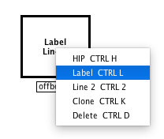
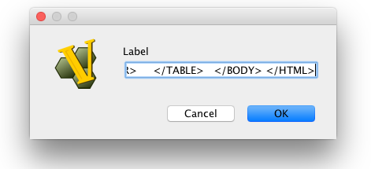
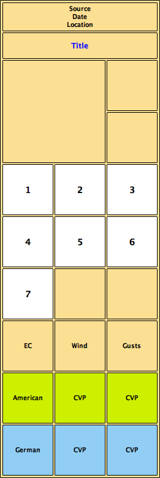
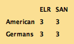
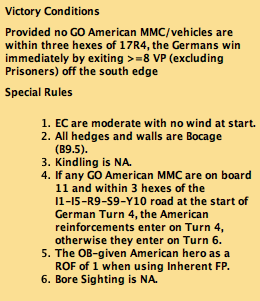

VASL Play Aids
Overview
The VASL Play Aids repository contains templates for creating visually pleasing and helpful playing aids for your VASL games.
How does it work?
VASL allows you to place HTML fragments next to your boards. This enables you to create pretty much any kind of graphical play aid. Usually these play aids are based on an HTML table. The HTML is copied into a Label (found under Draggable Oberlays) in VASL:
You then procees do copy in the HTML for your table like this:
Once you've pasted it in, it looks like this and you're free to add phase wheel, turn and EC markers etc.:
The source for this HTML table can be found here. You can adjust this table according to your needs, for example modify the number of turns. An example row for turns is written like this:
<TR>
<TD class="turn">1</TD>
<TD class="turn">2</TD>
<TD class="turn">3</TD>
</TR>
This will add three boxes for turns 1, 2 and 3 to your play aid. TR is a table row and TD is a table data element in HTML. The important bit here, is that you use the class attribute to assign a rendering type to your TD, giving it a white background. There are other types that you can use, some of which are used in the example source:
- phasewheel
- scenario
- token
- turn
- american
- german
- british
- russian
- japanese
Other examples
A useful aid is an ELR/SAN table like this:
Another useful addition is adding Victory Conditions and Special Rules next to the board. Especially in PBEM, these can be good reminders:
License

This work is licensed under a Creative Commons Attribution-ShareAlike 4.0 International License.